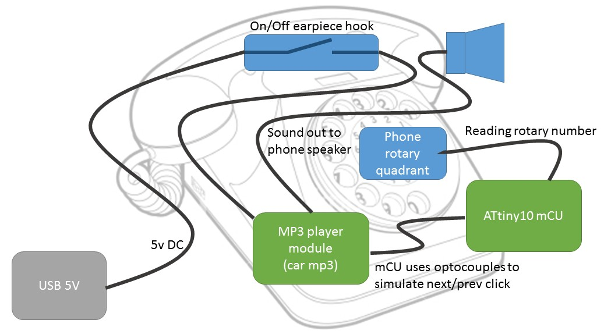
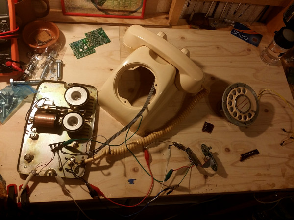
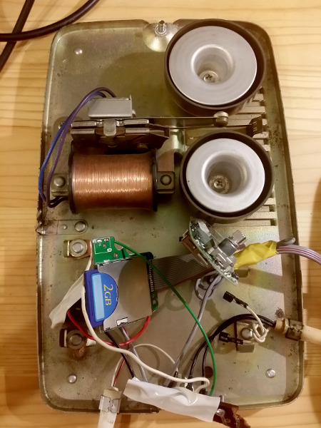
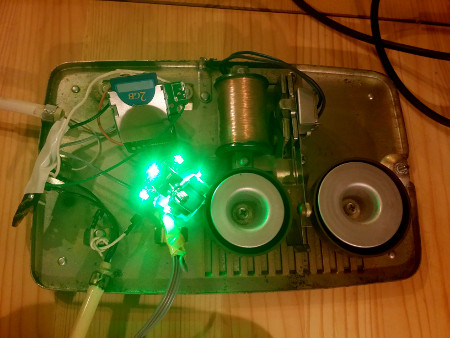

This is an artistic project: no real use in life, just be nice, sit, question or surprise you maybe?
Schematics

Basically I tried to reuse the maximum of the phone:
Main power switch is the earpiece switch, so when unused it uses 0 watt (to the tradeoff price that startup time of a couple of seconds)
The sound goes out from the earpiece, like you'd expect for a phone. Mic is unused now, but could be integrated for feedback?
MP3 car player module is one of those 5USD eBay cheap but working players (so respect and thanks): put a SD card inside formatted in FAT16, a couple MP3 and you're good.
The rotary quadrant is used as input for a small uC that will be the tiniest possible, meaning initial plan is ATTiny10 or ATTiny13.
The uC that as stated above gets the rotary dial input, search for some known code and "drives" the MP3 player. However it's limited now: only "Next" button is available (driven via optocouple).
Reusing a rotary phone
Rotary dial
That's the fun part: 3 wires, 1 input at GND and 2 outputs. Use a pulled-up pin to read, something happens when the pin becomes low.
① when you start sweeping the dial it gets low, maybe as a warning that dialing will happen.
② One low for each digit (10 for the zero) once the dial swipes back to its original position.
You'll find all of this explained in details in this Instructable (thanks for sharing mate).
Earpiece
A simple microphone and speaker, 2 pairs of wires, one for each. Unscrew the mouth/ear to see the wire colors. For mine it was black for ear, white for mouth. Is it a standard?
Electronics
Not much there, you got a few resistors, big coils if you're in need. They make perfect electromagnet I assume. The bell system is one: an arm with a permanent magnet that is placed between 2 bells and next to the electromagnet. When the later inverts its magnetic field rapidely, the arm is pulled or pushed, banging the bells. Simple and efficient. But anyway scavenging stopped here for me.
Images
 Exploded view of the phone, missing the dial though.
 You can see the MP3 player, with its SD card and some wires.
 While running, the mp3 player shiiiiiiiines but you can't see it once all assembled, and I'm too lazy to take the leds off if it's not visible. Will do though if it becomes a problem.